import numpy as np
import pandas as pd
import matplotlib.pyplot as plt
from pathlib import Path
from statsmodels.tsa.stattools import adfuller
from statsmodels.tsa.ar_model import AutoReg
rng = np.random.default_rng(49)
plt.rcParams.update({"figure.figsize": (10, 3), "axes.spines.top": False,
"axes.spines.right": False})
n = 100034 practice
download this notebook · daily temperature CSV · hourly temperature CSV
Put the three files in one folder and run the cells in order. Required packages: numpy, pandas, matplotlib, statsmodels.
34.1 White noise
Draw each observation independently from the same distribution. Here the mean is zero and the variance is one. The observations change; the distribution does not.
binary_noise = rng.choice([-1, 1], size=n)
gaussian_noise = rng.normal(0, 1, n)
fig, ax = plt.subplots(2, 1, figsize=(10, 4), sharex=True)
ax[0].plot(binary_noise, linewidth=0.7)
ax[0].set_title("Binary white noise")
ax[1].plot(gaussian_noise, linewidth=0.7)
ax[1].set(title="Gaussian white noise", xlabel="Time step")
fig.tight_layout()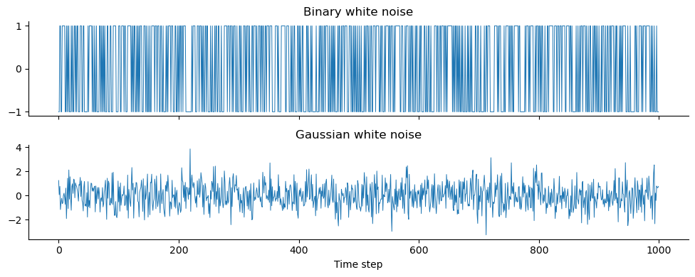
34.2 Random walk
Now accumulate the noise:
X_t = X_{t-1} + \varepsilon_t.
A positive or negative shock changes the level permanently. For independent, zero-mean shocks of variance \sigma_\varepsilon^2 and a fixed starting value, \operatorname{Var}(X_t)=t\sigma_\varepsilon^2: the variance grows with time.
walk_binary = binary_noise.cumsum()
walk_gaussian = gaussian_noise.cumsum()
fig, ax = plt.subplots(2, 1, figsize=(10, 4), sharex=True)
ax[0].plot(walk_binary)
ax[0].set_title("Accumulated binary noise")
ax[1].plot(walk_gaussian)
ax[1].set(title="Accumulated Gaussian noise", xlabel="Time step")
fig.tight_layout()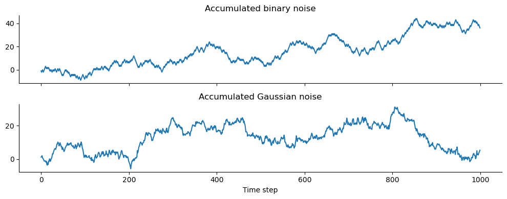
Change the random seed and run again. A random walk can look quite different each time.
34.3 AR(1): how much of yesterday remains?
X_t = \phi X_{t-1} + \varepsilon_t.
For |\phi|<1, a shock gradually fades. At \phi=1, we recover a random walk. For |\phi|>1, the forward simulation is explosive.
phi = 0.8 # try 0, -0.8, 0.98, 1, and 1.01
ar1 = np.zeros(n)
for t in range(1, n):
ar1[t] = phi * ar1[t - 1] + gaussian_noise[t]
plt.plot(ar1)
plt.title(f"AR(1), phi = {phi}")
plt.xlabel("Time step");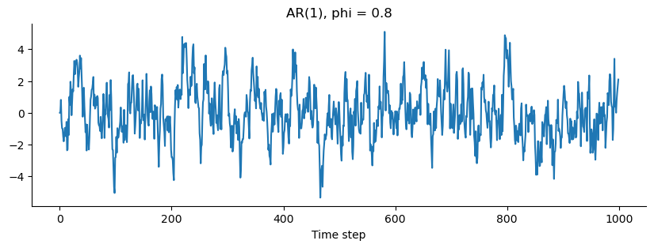
We started at zero. Even a stable AR model has a short initialization transient; later we discard a few hundred simulated observations. Near |\phi|=1, that transient can last longer.
34.3.1 AR(p): choose the coefficients
X_t = \phi_1 X_{t-1} + \phi_2 X_{t-2} + \cdots + \phi_p X_{t-p} + \varepsilon_t.
The order p is the number of lags. The list below is always [\phi_1,\phi_2,\ldots]: the first coefficient multiplies the most recent value. It is unrelated to a statistical test’s p-value.
def generate_ar(phi, n=1000, seed=49, burn=300):
rng = np.random.default_rng(seed)
p = len(phi)
noise = rng.normal(size=n + burn + p)
x = np.zeros(len(noise))
for t in range(p, len(x)):
x[t] = sum(phi[j] * x[t - j - 1] for j in range(p)) + noise[t]
return x[burn + p:]
phi_true = [0.7, -0.2] # AR(2); try [0.8] or [0.5, -0.2, 0.1]
ar_series = generate_ar(phi_true)
plt.plot(ar_series)
plt.title(f"AR({len(phi_true)}), coefficients = {phi_true}")
plt.xlabel("Time step");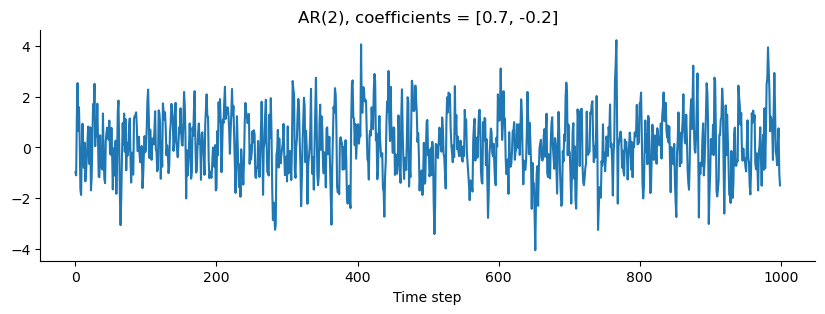
Try: change the coefficients, keeping a stable model for the fitting exercise later. For AR(2), use the coefficient-and-roots explorer. Arbitrary coefficients between -1 and 1 do not guarantee a stationary AR(p) process; all roots of 1-\phi_1 z-\cdots-\phi_p z^p must lie outside the unit circle for a stable causal model.
34.4 Does it look stationary?
Start with two checks:
- Mean: does it stay around the same value?
- Variance: does it stay around the same finite value, rather than growing without bound?
A rolling mean and rolling variance help us see changes over time. They are estimates, so some fluctuation is normal. These plots are useful checks, not a proof of stationarity.
def rolling_check(values, window=101, title="", log_variance=False, true_mean=None):
s = pd.Series(values)
rolling = s.rolling(window, center=True)
fig, ax = plt.subplots(2, 1, figsize=(10, 4), sharex=True)
ax[0].plot(s, color="0.65", linewidth=0.8, label="Observations")
ax[0].plot(rolling.mean(), color="teal", label="Rolling mean")
if true_mean is not None:
ax[0].axhline(true_mean, color="black", linestyle="--", label="Theoretical mean")
ax[0].legend()
ax[0].set_title(title)
ax[1].plot(rolling.var(), color="darkorange")
ax[1].set(ylabel="Rolling variance", xlabel="Time")
if log_variance:
ax[1].set_yscale("log")
ax[1].set_ylabel("Rolling variance (log scale)")
fig.tight_layout()time = np.arange(n)
# Mean stays zero, but the size of the fluctuations keeps growing.
growing_noise = np.exp(time / 200) * gaussian_noise
# An AR(1) with phi > 1 amplifies earlier values.
explosive = np.zeros(n)
for t in range(1, n):
explosive[t] = 1.01 * explosive[t - 1] + gaussian_noise[t]
examples = {
"Stable AR(1)": generate_ar([0.8]),
"Random walk": walk_gaussian,
"Changing mean": 0.01 * time + gaussian_noise,
"Growing variance": growing_noise,
"Explosive AR(1), phi = 1.01": explosive,
}
for name, values in examples.items():
rolling_check(values, window=101, title=name,
log_variance=name in ["Growing variance", "Explosive AR(1), phi = 1.01"],
true_mean=0 if name == "Growing variance" else None)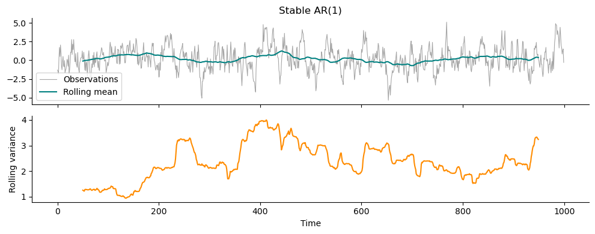
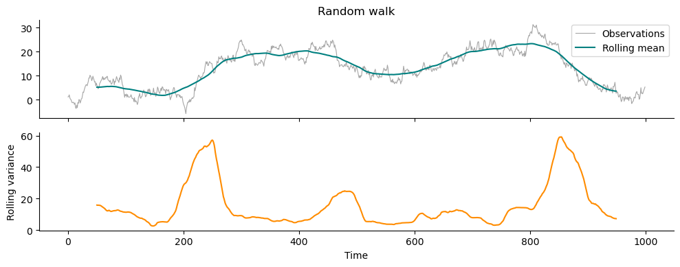
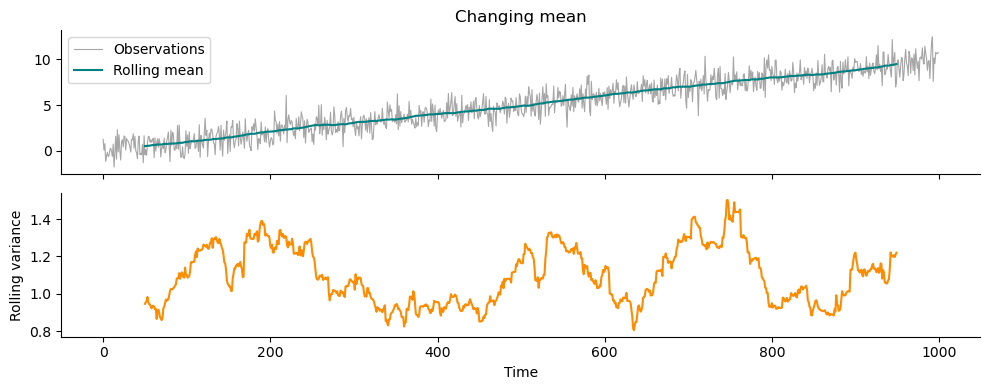
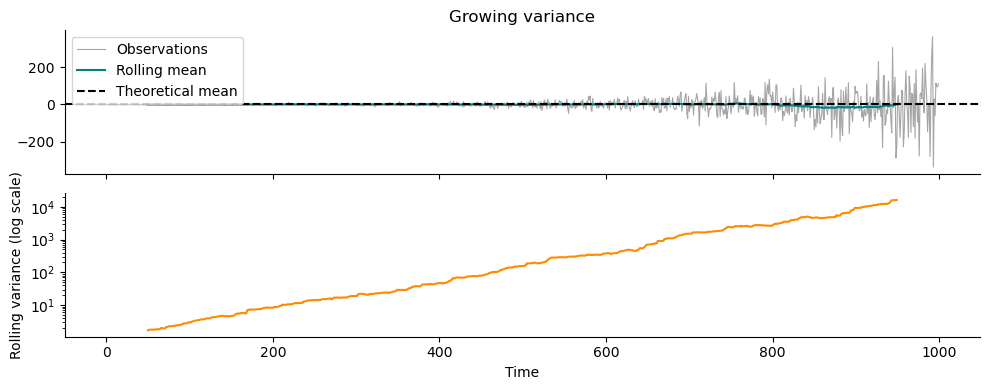
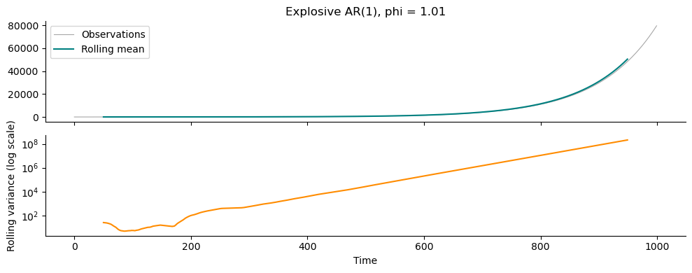
In Growing variance, we multiply zero-mean noise by a number that keeps increasing:
X_t=e^{t/200}\varepsilon_t.
Since the noise has mean 0 and variance 1,
\mathbb{E}[X_t]=0,\qquad \operatorname{Var}(X_t)=e^{t/100}\longrightarrow\infty.
The dashed line marks the theoretical mean, which stays zero while the variance grows without bound. The estimated rolling mean can still fluctuate, especially when the noise becomes large.
The last two variance plots use a log scale to make the growth visible. Change the rolling width from 101 to 21 or 201 to see how the estimates change.
34.5 The Augmented Dickey–Fuller test
The ADF test is a statistical tool that helps us assess stationarity. We will use it without going into its derivation.
- p-value < 0.05: evidence against a random-walk type of nonstationarity, called a unit root.
- p-value ≥ 0.05: not enough evidence to rule it out.
A small p-value supports stationarity, but does not prove it: also check the mean and variance in the plots. The p-value is not the probability that the series is stationary.
result = adfuller(ar1, maxlag=12, autolag="AIC")
pvalue = result.pvalue if hasattr(result, "pvalue") else result[1]
print(f"p-value: {pvalue:.4f}")p-value: 0.0000Apply the same test to our examples. The helper below collects the results in a table.
Optional: how the test gets a p-value · Python documentation
Helper: ADF results for several series
def adf_report(values):
s = np.asarray(values, dtype=float)
if len(s) < 20 or not np.isfinite(s).all() or np.ptp(s) == 0:
raise ValueError("Use at least 20 finite, nonconstant, equally spaced observations.")
maxlag = min(12, len(s) // 2 - 2)
result = adfuller(s, regression="c", maxlag=maxlag, autolag="AIC")
# Attributes also work with the newer statsmodels result-object API.
if hasattr(result, "statistic"):
statistic, pvalue, lags = result.statistic, result.pvalue, result.lags
else:
statistic, pvalue, lags = result[:3]
return {"ADF statistic": statistic, "p-value": pvalue, "lags": lags,
"conclusion": "Reject unit root" if pvalue < 0.05 else "Do not reject unit root"}
pd.DataFrame({name: adf_report(values) for name, values in examples.items()}).T| ADF statistic | p-value | lags | conclusion | |
|---|---|---|---|---|
| Stable AR(1) | -10.295256 | 0.0 | 2 | Reject unit root |
| Random walk | -2.160837 | 0.220765 | 0 | Do not reject unit root |
| Changing mean | -0.765849 | 0.828949 | 12 | Do not reject unit root |
| Growing variance | -14.797614 | 0.0 | 4 | Reject unit root |
| Explosive AR(1), phi = 1.01 | 4977.535679 | 1.0 | 0 | Do not reject unit root |
34.6 Temperature: which window are we describing?
A few years of temperature show a seasonal cycle. January to June can look like a rising trend. A single day shows a different part of the pattern.
We will compare daily temperatures in Jerusalem from 2020–2022 and hourly temperatures from July 2022.
# Put the downloaded CSVs next to the notebook.
data_folder = Path("practice-data") if Path("practice-data").exists() else Path(".")
daily = pd.read_csv(data_folder / "jerusalem_daily_2020_2022.csv",
parse_dates=["time"], index_col="time")["temperature"]
hourly = pd.read_csv(data_folder / "jerusalem_hourly_july_2022.csv",
parse_dates=["time"], index_col="time")["temperature"]
plt.plot(daily)
plt.ylabel("Daily mean temperature (°C)");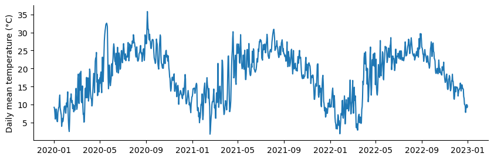
34.6.1 Change the window
Choose three years, January–June, one week, or one day. Move the sliders and compare the plots with the ADF result.
The observation window selects the data for the test. The rolling width changes the mean and variance curves. Switching between daily and hourly data also changes the sampling interval.
Open the window experiment in a full browser tab
windows = {
"Three years · daily": daily,
"January–June 2021 · daily": daily.loc["2021-01":"2021-06"],
"One week · hourly": hourly.loc["2022-07-01":"2022-07-07"],
"One day · hourly": hourly.loc["2022-07-01"],
}
pd.DataFrame({name: adf_report(values) for name, values in windows.items()}).T| ADF statistic | p-value | lags | conclusion | |
|---|---|---|---|---|
| Three years · daily | -2.936691 | 0.041245 | 10 | Reject unit root |
| January–June 2021 · daily | -2.596429 | 0.093738 | 2 | Do not reject unit root |
| One week · hourly | -3.541167 | 0.006991 | 11 | Reject unit root |
| One day · hourly | 1.329503 | 0.996769 | 10 | Do not reject unit root |
selected = daily.loc["2021-01":"2021-06"] # choose different dates
rolling_check(selected, window=31, title="January–June: daily temperature")
adf_report(selected){'ADF statistic': -2.596428761748879,
'p-value': 0.09373761846104106,
'lags': 2,
'conclusion': 'Do not reject unit root'}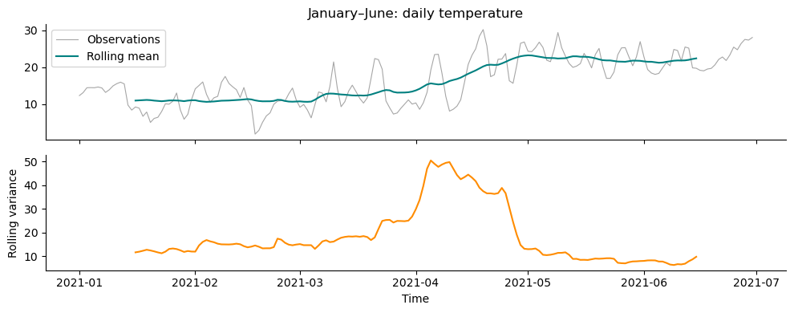
Several complete years can have a stable overall average while the mean still changes with the season. A low ADF p-value does not remove that seasonal pattern. Hourly data can also have a day–night cycle.
Changing the window changes what we can see and how much evidence the test has. It does not change the process that produced the data.
34.7 Fit temperature, then let it run
We chose coefficients when making synthetic AR series. Now estimate them from a window of hourly temperature:
T_t=c+\phi_1 T_{t-1}+\cdots+\phi_p T_{t-p}+\varepsilon_t.
Try AR(1), AR(2), …, up to AR(24). BIC balances fit against the number of coefficients; we keep the model with the lowest BIC. Every candidate uses the same target observations so the comparison is fair.
Select two weeks for fitting. The following observations are not used in model selection or fitting.
train = hourly.loc["2022-07-01":"2022-07-14"].to_numpy()
max_order = min(24, len(train) // 5)
models = [AutoReg(train, lags=p, hold_back=max_order, trend="c").fit()
for p in range(1, max_order + 1)]
fit = min(models, key=lambda model: model.bic)
p = len(fit.params) - 1
print(f"Selected model: AR({p})")Selected model: AR(24)steps = 72 # continue for three days
noise_sd = np.sqrt(fit.sigma2)
new_noise = np.random.default_rng(49).normal(0, noise_sd, steps)
# Begin with the training observations, then append only generated values.
values = list(train)
for shock in new_noise:
next_value = fit.params[0] + sum(fit.params[j + 1] * values[-j - 1] for j in range(p))
values.append(next_value + shock)
simulation = np.array(values[len(train):])
# The average forecast follows the same recurrence with future noise set to zero.
average_forecast = fit.predict(start=len(train), end=len(train) + steps - 1)After the training window, both continuations use their own previous values. Neither receives the actual future temperature.
- Simulated future: add a new random noise value at each step. This gives one possible continuation.
- Average forecast: set future noise to zero. Its oscillations may gradually fade.
The widget chooses the AR order automatically. Compare one week with two weeks. The main plot always shows only the last three training days, so changing the training window does not squeeze the whole record into one graph.
Open the AR fitting experiment in a full browser tab
history = 72
fig, ax = plt.subplots(figsize=(10, 4))
ax.plot(np.arange(-history, 0), train[-history:], color="0.5", label="Observed history")
ax.plot(np.arange(-1, steps), np.r_[train[-1], simulation], color="darkorange", label="Simulated future")
ax.plot(np.arange(-1, steps), np.r_[train[-1], average_forecast], color="teal", linestyle="--", label="Average forecast")
ax.axvline(-0.5, color="black", linestyle=":")
ax.set(xlabel="Hours after the training window", ylabel="Temperature (°C)", title=f"AR({p}): continue without future observations")
ax.legend()
fig.tight_layout()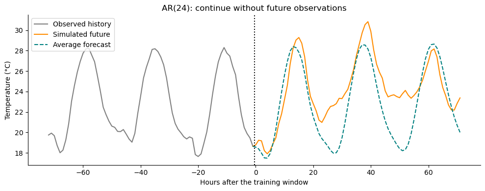
The model can capture an oscillatory pattern without matching the actual future weather. New noise makes each simulated path different. A useful fit also does not establish that raw temperature is stationary.
The selected order is the best among the candidates for this window, not a known “true order” of temperature. AutoReg documentation.
34.8 Differencing: remove a trend, then fit
A trend can make a series nonstationary. Differencing replaces each value with its change from the previous value:
\Delta X_t=X_t-X_{t-1}.
Sometimes one difference is enough to obtain a stationary series. If a trend remains, we can try differencing again:
\Delta^2 X_t=\Delta X_t-\Delta X_{t-1}.
For example, 10, 12, 14, 16 becomes 2, 2, 2: the rising level becomes a constant change. Check the plots and the ADF result before deciding whether another difference is useful.
temperature = daily.loc["2020-01-01":"2020-06-30"].to_numpy()
d = 1 # Try 0, 1, or 2 differences, keeping the same temperature window.
changes = np.diff(temperature, n=d)
rolling_check(changes, window=15, title=f"Daily temperature after {d} difference(s)")
pd.DataFrame({"Original temperature": adf_report(temperature),
f"After {d} difference(s)": adf_report(changes)}).T| ADF statistic | p-value | lags | conclusion | |
|---|---|---|---|---|
| Original temperature | -2.248994 | 0.188946 | 2 | Do not reject unit root |
| After 1 difference(s) | -12.791614 | 0.0 | 1 | Reject unit root |
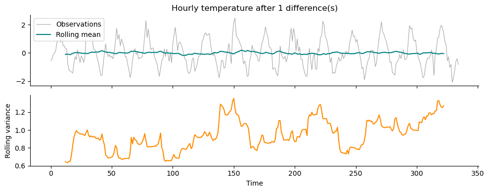
Fit the AR relationship to these values. Generate its future using its own previous values, just as before.
max_order = min(24, len(changes) // 5)
models = [AutoReg(changes, lags=p, hold_back=max_order, trend="c").fit()
for p in range(1, max_order + 1)]
change_fit = min(models, key=lambda model: model.bic)
p = len(change_fit.params) - 1
print(f"AR({p}) fitted after {d} difference(s)")
steps = 30 # Days, because these are daily observations.
noise = np.random.default_rng(49).normal(0, np.sqrt(change_fit.sigma2), steps)
values = list(changes)
for shock in noise:
next_value = change_fit.params[0] + sum(
change_fit.params[j+1] * values[-j-1] for j in range(p))
values.append(next_value + shock)
future_changes = np.array(values[len(changes):])AR(2) fitted after 1 difference(s)Return to temperature by adding the generated changes to the last observed temperature. With two differences, first rebuild the daily changes, then the temperature. We never insert actual future observations.
def to_temperature(future):
if d == 2:
future = np.cumsum(future) + (temperature[-1] - temperature[-2])
if d >= 1:
future = np.cumsum(future) + temperature[-1]
return np.asarray(future)
simulation = to_temperature(future_changes)
average = to_temperature(change_fit.predict(len(changes), len(changes) + steps - 1))
history = 60
plt.plot(np.arange(-history, 0), temperature[-history:], color="0.5", label="Observed history")
plt.plot(np.arange(-1, steps), np.r_[temperature[-1], simulation], color="darkorange", label="Simulated future")
plt.plot(np.arange(-1, steps), np.r_[temperature[-1], average], color="teal", linestyle="--", label="Average forecast")
plt.axvline(-0.5, color="black", linestyle=":")
plt.xlabel("Days after the training window")
plt.ylabel("Temperature (°C)")
plt.legend();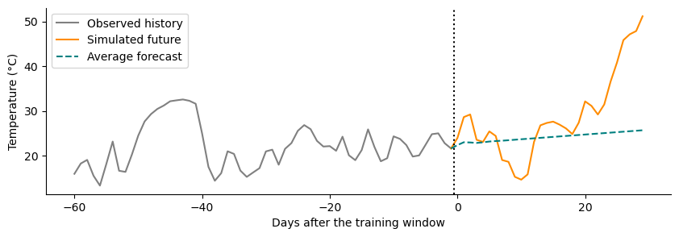
34.8.1 Compare zero, one, and two differences
Keep the window fixed and change the number of differences. Reveal the actual future to compare the continuations. More differencing is not automatically better. A seasonal cycle may remain, and errors can accumulate when we add the changes back.
34.9 A small step toward ARIMA (optional)
We have met AR: use past values. We have met I: difference the original series d times before modeling it.
The MA part uses past shocks, rather than past observations. In MA(1), one shock affects two successive values:
X_t=\varepsilon_t+\theta\varepsilon_{t-1}.
This is different from a rolling average of the observed temperature. In real data the shocks are hidden; during model fitting they are inferred from prediction errors. For a simulation, we know them:
theta = 0.7
shocks = np.random.default_rng(49).normal(size=n + 1)
ma1 = shocks[1:] + theta * shocks[:-1]
plt.plot(ma1[:150])
plt.title(f"MA(1): one new shock + {theta} × the previous shock")
plt.xlabel("Time step");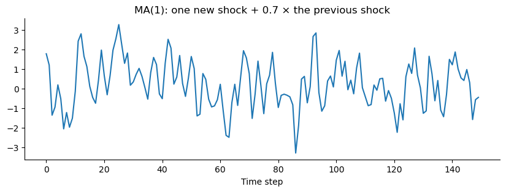
ARIMA(p, d, q) combines p lags of the values, d differences, and q lags of the shocks. We will stop at that connection here.